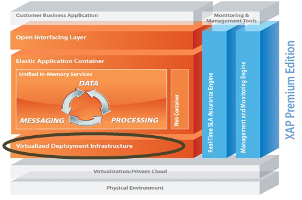
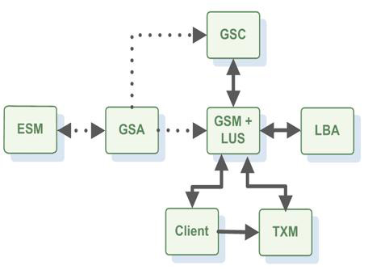

Table of Contents
- Quick Start Guide
- Screen Casts
- Scaling Your Web Application
- Setting Up Your First Data Grid
- Writing Your First XTP Application
- Introduction to XAP JPA
- Beyond the Basics
- Product Overview
- Concepts
- A Typical SBA Application
- Database Integration
- Product Architecture
- The Application Layer
- Terminology
- Programmer's Guide
- The Runtime Environment
- Packaging and Deployment
- The In-Memory Data Grid
- Services on Top of the Data Grid
- Web Application Support
- Administration and Monitoring API
- Integrations
- Interoperability
- Appendix
- Administrator's Guide
- Installation
- Configuring the System
- Web Management Console
- Security
- GigaSpaces Logging
- Networking How Tos
- Managing and Monitoring a Running System
- Advanced Tasks
The Runtime Environment
This section gives a detailed description of the GigaSpaces deployment & runtime environment.
The basic unit of deployment in the GigaSpaces XAP platform is the Processing Unit.
Once packaged, a processing unit is deployed onto the GigaSpaces runtime environment, which is called the Service Grid. It is responsible for materializing the processing unit's configuration, provisioning its instances to the runtime infrastructure and making sure they continue to run properly over time.
When developing your processing unit, you can run and debug the processing unit within your IDE. You will typically deploy it to the GigaSpaces runtime environment when it's ready for production or when you want to run it in the real-life runtime environment.
The service grid is composed of a number of components:
The Grid Service Agent (GSA) has been introduced with GigaSpaces XAP 7.0. You can think of it as a daemon or a background service, which can start and stop any of the other runtime components (at the process/JVM level).
Typically, the GSA is started with the hosting machine's startup. Using the agent, you can bootstrap the entire cluster very easily, and start and stop additional GSCs, GSMs and lookup services at will.
All of the above components are fully manageable from the GigaSpaces management interfaces such as the GUI and the administration and monitoring API.
When a processing unit is deployed, its instances are provisioned to the running GigaSpaces containers. The Grid Service Container provides an isolated runtime for the processing unit instance, and exposes its state to The Grid Service Manager.